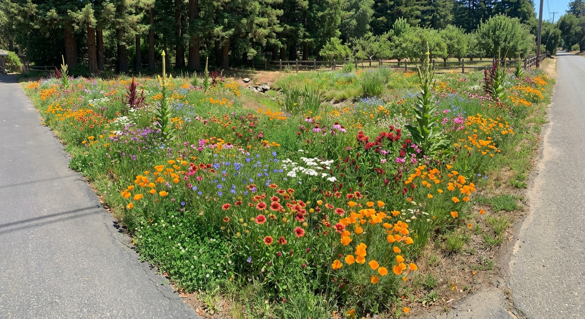

Bear Creek Way · Santa Cruz Mountains · 2026
Mountain Bay
Meadow Reset
Meadow Reset
Field Guide · WOW Triangle ~5,500 sq ft
Today's Mission
Surface prep → sort seeds → 4 broadcast batches → cross-pattern passes → roll → hand-place accents. Total mix ~115 lb.
Complete
Glyphosate application
Full WOW triangle sprayed with blue dye marker.
Complete
Dieback period (12+ days)
Annual grasses confirmed dead. Rush clumps preserved.
Now
Knock down & surface prep
Brush cutter → weed-whacker → light hand rake. Rush clumps 4–6". No deep tilling.
Next
Sort & mix seeds into 4 buckets
Bucket C fine seeds premixed with 10 lb lime first. All bee balm varieties combined.
Next
Build 4 batches, broadcast WOW triangle
4 directional passes. Gate 4–5 on Chapin 89200.
Next
Hand-place accent species
Scabiosa cluster (mid band) + Hopi Amaranth sentinels (back center) + Mullein (6 spots) + Gomphrena (back zone).
Next
Roll field
Lawn roller N→S then E→W.
Separate
Back field — Tri-clover + Nigella reserve
10 lb clover + 4,000 Nigella seeds. Completely separate from WOW triangle.
Full inventory
A Heavy ~3 lb (incl. cosmos)
B Medium ~30,000 seeds
C Fine ~16,000 seeds
D Accents + hand-place species
Carrier 100 lb lime pellets
Biochar 10 lb Anderson's DG
Scabiosa ~160 seeds · hand cluster
Hopi Amaranth ~28 seeds · sentinels
Plan Review
Corrections & Improvements
Read these before mixing. Ordered by severity.
Fix before mixing
Celosia missing from batch instructions
1,000-seed Mix Cockscomb Celosia belongs in Batch 3 with warm-season ornamentals. Summer bloomer needing warm soil — not in Batch 1 or 2.
Fix before mixing
Biochar not in mixing plan
10 lb Anderson's BioChar DG goes into Batch 1 with the heavy seeds and lime. Pellet size matches lime — flows through Chapin spreader without issue.
Fix before mixing
Gomphrena — concentrate in back zone only
1,000 seeds across 5,500 sq ft is invisible. Concentrate all 1,000 in back-base zone (~800 sq ft) for ~1.25 seeds/sqft. Hand broadcast during Batch 3, separate container, not in spreader.
Fix before mixing
Scarlet Flax (annual) and Blue Flax (perennial) need different zones
Scarlet Flax must re-seed each year — tip and mid band, full sun. Blue Flax returns from root each year — anchor mid-to-back where it won't be disturbed.
Fix before mixing
Bupleurum belongs in Bucket B only, not C
Medium seed. Goes with flax and nigella in Bucket B, not the fine-seed lime premix.
Reduce quantity
Nigella — use 8,000 seeds, hold back 4,000
Full 12,000 will crowd poppies and flax in Year 1. Reserve 4,000 for back field with clover — see Back Field tab.
Consolidate
Three bee balm varieties — combine before sorting
Wild Bergamot (1,000) + Scarlet (500) + Mix (500) = 2,000 total. Combine first, then split half into Batch 2, half into Batch 3.
Watch when cutting
Mugwort — check for green regrowth at crowns
12 days post-glyphosate is fine for annuals but mugwort rhizomes can resprout. Green at crown base = cut and remove, don't fold into mulch layer.
Lifecycle note
Toothache Plant is a tender perennial, not a true annual
Can survive mild winters at your elevation and get much larger in Year 2. Don't cut back hard in autumn.
Added — previously missing
Dwarf Cosmos ¼ lb, Scabiosa ×2 varieties, Hopi Red Dye Amaranth now in plan
• Cosmos ¼ lb → Bucket A, tip + mid zones.
• Scabiosa (~160 seeds) → hand-sow concentrated cluster in mid band only. Black Knight burgundy against orange poppies is the strongest color contrast in the field.
• Hopi Red Dye Amaranth (~28 seeds) → 4–5 hand-placed sentinels at very back center. 5–8 ft tall, massive crimson heads. Completely different from ornamental amaranthus.
• Scabiosa (~160 seeds) → hand-sow concentrated cluster in mid band only. Black Knight burgundy against orange poppies is the strongest color contrast in the field.
• Hopi Red Dye Amaranth (~28 seeds) → 4–5 hand-placed sentinels at very back center. 5–8 ft tall, massive crimson heads. Completely different from ornamental amaranthus.
Resolved
Chapin 89200 gate settings documented — see Spreader tab
Start at 4 (Earth Science fast-acting lime flows faster than NutraLime). Full settings per batch in Spreader tab.
Resolved — see Back Field tab
4,000 Nigella reserve works well with clover in back field
Nigella germinates Feb–Mar in cool soil, blooms Apr–May, dies June → clover fills gap. On bare reset soil with no head start on either side. Compatible. ~1.1 seeds/sqft across ~3,500 sq ft.
Step 1 of 4
Sort into Buckets
Separate before combining anything. Different seed sizes in the same batch cause heavy seeds to sink and fine seeds to clump.
Do this first
Combine all three bee balm varieties into one container. Pull Gomphrena, Scabiosa, Hopi Amaranth, and Mullein aside — they never go in the spreader.A
Heavy / by weight
~3 lb total · Batch 1 · tip + mid zone bias
⌄
California Poppy (Orange)
1 lb · tip zone · Feb–May
Calendula Mix
1 lb · tip zone · Mar–Jun
Lacy Phacelia
1 lb · mid band · Mar–May · pollinator magnet
Clarkia (Red)
¼ lb · tip–mid transition · Apr–Jun
Plains Coreopsis
¼ lb · throughout · May–Aug · self-thins
Ammi / Bishop's Flower
¼ lb · mid band · May–Jul · white filler
Dwarf Cosmos — Sensation Mix Early
¼ lb (~3,500 seeds) · annual · tip + mid · Jun–Oct
Add 10 lb biochar DG to this bucket before combining with lime in Batch 1.
Cosmos: skew toward tip and mid band. 12–18" height won't shade poppies. Fills summer gap after spring flush. Self-thins naturally.
Cosmos: skew toward tip and mid band. 12–18" height won't shade poppies. Fills summer gap after spring flush. Self-thins naturally.
B
Medium / counted seeds
~30,000 seeds · split Batch 1 & 2
⌄
Nigella / Love-in-a-Mist
8,000 of 12,000 · hold back 4,000 for back field
California Poppy (Golden West)
5,000 seeds · tip zone supplement
Scarlet Flax (×2 packets)
10,000 seeds · ANNUAL — tip + mid zones only
Blue Flax
5,000 seeds · PERENNIAL — skew mid-to-back
Craspedia (Billy Buttons)
1,000 seeds · mid + back · yellow globes
Bupleurum (Hare's Ear)
1,000 seeds · medium seed — NOT Bucket C
Bee Balm — all 3 varieties (half)
1,000 of 2,000 combined seeds
Scarlet Flax is annual, Blue Flax is perennial — keep separated by zone. Craspedia — stir thoroughly, small enough to sink if you don't.
C
Fine seeds — premix with lime first
~16,000 seeds · premix 10 lb lime → fold into Batch 2
⌄
Wild White Yarrow
5,000 seeds · perennial · throughout field
Parker Yarrow (yellow)
5,000 seeds · perennial · throughout field
Summer Berries Yarrow (mixed)
1,000 seeds · perennial · throughout field
Toothache Plant (Spilanthes)
5,000 seeds · tender perennial · may overwinter
⚠ DUST-FINE. Do NOT dump directly into main batch. Pour all Bucket C into a separate container with 10 lb lime, stir 2–3 minutes until coated, then fold the entire clump into Batch 2.
Gomphrena moved out — hand-broadcast back zone only. Bupleurum is in Bucket B, not here.
Gomphrena moved out — hand-broadcast back zone only. Bupleurum is in Bucket B, not here.
D
Accents + hand-place species
Batch 3 for broadcaster · several hand-place only
⌄
Early Splendor Amaranthus
5,000 seeds · back zone outer edges
Pygmy Torch Amaranthus
5,000 seeds · back zone center cluster
Mix Celosia (Cockscomb)
1,000 seeds · back zone · warm-season
Bee Balm — all 3 varieties (remaining half)
1,000 of 2,000 combined seeds
Trionum Hibiscus
250 seeds · back zone · Jul–Sep
Purple Gomphrena hand only
1,000 seeds · back-base zone only (~800 sq ft)
Scabiosa Black Knight + Summer Fruits hand only
~160 seeds · 6×6 ft cluster in mid band
Hopi Red Dye Amaranth hand only
~28 seeds · 4–5 back-center sentinels · 5–8 ft
Mullein (Southern Charm) hand only
30 seeds · 6 spots across whole field · flowers Year 2
Scabiosa: hand-sow both varieties together in a ~6×6 ft patch in the mid band (~20 seeds/sqft). Black Knight's deep burgundy against orange poppies is the strongest color contrast in this field. Self-seeds Year 2+.
Hopi Red Dye Amaranth: grows 5–8 ft with massive crimson grain heads. Completely different from ornamental amaranthus. 4–5 seeds at very back center, 3–4 ft apart.
Gomphrena: hand-broadcast back-base zone only for visible density.
Mullein: 5 seeds per spot, 6 spots, press with thumb. Flowers Year 2.
Hopi Red Dye Amaranth: grows 5–8 ft with massive crimson grain heads. Completely different from ornamental amaranthus. 4–5 seeds at very back center, 3–4 ft apart.
Gomphrena: hand-broadcast back-base zone only for visible density.
Mullein: 5 seeds per spot, 6 spots, press with thumb. Flowers Year 2.
Step 2 of 4
Build the 4 Batches
100 lb lime split equally across 4 passes. Each batch = one directional sweep. Cross-pattern eliminates seed streaks.
Bucket C premix must be done first
All fine seeds must already be pre-stirred into their 10 lb of lime before building Batch 2.1
N → S pass
Main structural layer
25 lb lime + 10 lb biochar DG
- All of Bucket A (~3 lb heavy seeds)
- Half of Bucket B (medium seeds)
2
E → W pass
Fine seed distribution
25 lb lime
- Remaining Bucket B
- Entire Bucket C premix (already in 10 lb lime)
3
NW → SE diagonal
Ornamental accent layer
25 lb lime
- Bucket D broadcast seeds (Amaranthus, Celosia, Bee Balm, Hibiscus)
- Skew heavier over back third
- Hand-broadcast Gomphrena in back zone
4
SE → NW diagonal
Lime-only finish
25 lb lime — no seed
- Fills coverage gaps from passes 1–3
- Ensures full lime soil contact
- pH correction throughout clay
After all 4 passes
Hand-place accent species
Scabiosa cluster in mid band (6×6 ft, both varieties mixed, ~20 seeds/sqft). Hopi Red Dye Amaranth — 4–5 seeds at back center, 3–4 ft apart. Mullein — 5 seeds × 6 spots across whole field.
Roll the field
Lawn roller. 1 pass N→S, 1 pass E→W. Moderate weight — pressing seed into cracks, not burying it.
Then stop
Do not rake again, do not cover, do not fertilize. Light irrigation front zone only if rain doesn't arrive in 5–7 days.
Color Strategy
WOW Triangle Zones
Design from tip to base. Each zone has a distinct color mood that transitions naturally.
Poppy (orange + golden)
Calendula, Coreopsis, Cosmos
Clarkia, Scarlet Flax (tip–mid)
Blue Flax, Phacelia, Nigella
Ammi, Bupleurum (white/green filler)
Scabiosa cluster (hand-sow 6×6 ft)
Both Amaranthus varieties
Celosia, Hibiscus, Bee Balm
Gomphrena (back-base hand broadcast)
Hopi Red Dye Amaranth (4–5 sentinels)
Yarrow (all 3 varieties) — throughout
Craspedia — mid + back
Mullein — 6 hand-placed spots
Tip Zone — Orange & Gold
Poppy · Calendula · Coreopsis · Cosmos · Scarlet Flax
California Poppy (both orange and golden varieties), Calendula, Coreopsis, Scarlet Flax, and Dwarf Cosmos anchor the focal point. These bloom earliest (Feb–May) and make the loudest first impression. Cosmos extends the orange/pink palette through summer (Jun–Oct) filling the gap after spring poppies fade.
Mid Band — Blue, White & Lavender
Blue Flax · Phacelia · Nigella · Ammi · Scabiosa cluster
Blue Flax, Nigella (blue-white), Phacelia (purple), Ammi (white cloud), Bupleurum (lime green filler) cool the palette between the hot tip and dramatic back. Choose a 6×6 ft patch here for your ~160 Scabiosa seeds. Black Knight's deep burgundy against this blue/white palette is the most striking color moment in the whole field.
Back Base — Drama & Height
Amaranthus · Celosia · Hibiscus · Hopi Sentinels
Amaranthus (Early Splendor at outer edges, Pygmy Torch center), Celosia, Hibiscus, Bee Balm. The 4–5 Hopi Red Dye Amaranth sentinels anchor the center at 5–8 ft tall with crimson grain heads visible from across the property by late summer. All warm-season — won't appear until summer soil temps rise.
Yarrow — the perennial skeleton
Three varieties (white, yellow, mixed berries) dispersed throughout all zones. By Year 2 yarrow becomes the structural backbone the other plants weave through. Still looks good after everything else has finished.
Clarkia and Flax as the transition bridge
Let Clarkia and both flax varieties drift across the tip-to-mid boundary. Don't confine them — the color gradient should read soft, not striped.
Chapin 89200
Spreader Settings
Gate opens on a 1–10 scale. Always do a 10 ft test pass onto a tarp before committing to the field.
4–5
Recommended range
Batch 1 (heavy + biochar)4.5–5
Batch 2 (medium + fine premix)4–4.5
Batch 3 (accent ornamentals)4–5
Batch 4 (lime only)5–6
Walking pacesteady ~3 mph
Spread width~8–10 ft
Earth Science fast-acting lime note
This lime is finer than Anderson's NutraLime and flows faster through the gate. Start at 4 on your first batch — not 5 — and test before committing.Test pass protocol
Each batch: do one 10 ft pass onto a tarp. Even distribution, no clumping. Too fast → close ½ step. Too little → open ½ step.Walking pattern
Pass 1 (Batch 1) — N to S
Parallel strips, 8 ft spacing. Start slightly outside triangle edge so perimeter gets full coverage.
Pass 2 (Batch 2) — E to W
Perpendicular to Pass 1. The cross-pattern is what eliminates seed streaks.
Pass 3 (Batch 3) — NW to SE diagonal
Ornamental accent layer. Slow down over back-base zone for extra density. Can double-pass the back third.
Pass 4 (Batch 4) — SE to NW diagonal, lime only
Gate 5–6. Fills any coverage gaps. Every patch of clay gets lime contact.
Field Execution
Day-of Checklist
Tap to mark complete. Progress tracked in header.
✓
Surface prep complete
Brush cutter → weed-whacker → light hand rake. Rush clumps 4–6". No deep tilling.
✓
Checked for mugwort regrowth at crowns
Any green at crown base = cut and remove. Don't fold into mulch layer.
✓
All bee balm varieties combined
Bergamot + Scarlet + Mix → one container. Split half to Bucket B, half to Bucket D.
✓
Bupleurum confirmed in Bucket B, not C
Medium seed — goes with flax and nigella, not the fine-seed premix.
✓
Gomphrena, Scabiosa, Hopi Amaranth, Mullein set aside
All hand-place species in separate containers, clearly labeled. None go in the spreader.
✓
~4,000 Nigella seeds held back for back field
Labeled bag for tri-clover session — see Back Field tab.
✓
Bucket C fine seeds premixed with 10 lb lime
All yarrow (3 varieties) + Toothache Plant → separate container, stir 2–3 min until coated.
✓
Batch 1 built and test pass done — Pass 1 complete (N→S)
25 lb lime + 10 lb biochar + Bucket A + half Bucket B. Gate 4.5–5, test pass first.
✓
Pass 2 complete (E→W)
Batch 2: 25 lb lime + remaining Bucket B + Bucket C premix. Gate 4–4.5.
✓
Pass 3 complete (NW→SE) + Gomphrena hand-broadcast
Batch 3: accent ornamentals. Slow over back-base zone. Gomphrena hand-broadcast back zone only.
✓
Pass 4 complete (SE→NW, lime only)
Gate 5–6. No seed. Full-field lime finish.
✓
Scabiosa cluster hand-sown in mid band
Black Knight + Summer Fruits mixed in ~6×6 ft patch. ~20 seeds/sqft. Not in spreader.
✓
Hopi Red Dye Amaranth placed at back center
4–5 seeds, very back center, 3–4 ft apart. Not mixed with ornamental amaranthus.
✓
Mullein hand-placed + field rolled
6 spots × 5 seeds pressed with thumb. Lawn roller N→S + E→W. Moderate weight. Do not rake after rolling.
Back field is a separate operation
10 lb tri-clover + 4,000 Nigella seeds. Own broadcast session. No wildflower seed mixed in.What the surface should look like after rolling
Flattened straw, scattered soil pockets, lime pellets visible, rush clumps trimmed. Rough and patchy is correct. Not a smooth lawn.
Separate Operation
Back Field — Clover + Nigella
Completely separate from the WOW triangle. Do not mix clover into any WOW triangle batch.
Back Field — Nigella + Tri-Clover
Annual color layer over perennial soil-building base
4,000 reserved Nigella seeds broadcast with clover on bare reset soil. Different seasonal schedules mean no real competition — Nigella in cool weather (Feb–May), clover filling the gap from June onward.
Feb–Mar: Nigella germinates first
Cool soil favours Nigella. Clover slow in cold clay. Nigella establishes unopposed.
Apr–May: Nigella blooms, clover accelerates
Nigella at full bloom. Clover growing but Nigella is tall enough not to be shaded. Two plants at different canopy heights.
Jun: Nigella sets seed and dies
Annual lifecycle complete. Opens space. Clover surges for the rest of the season.
Jul–Oct: Clover holds the field
Nitrogen fixation. Dog-safe running surface. Nigella seed banked for Year 2.
Year 2+: Self-seeding loop
Nigella self-sows reliably on disturbed clay. The cycle becomes self-sustaining.
One risk
If clover were already established it could crowd Nigella seedlings. On bare reset soil this is not a concern — both start from zero.How to mix and broadcast
Combine 4,000 Nigella with 10 lb tri-clover in one container. Simple cross-pattern N→S then E→W. No roller required unless soil is very loose. Rate: ~1.1 Nigella seeds/sqft across ~3,500 sq ft.
Chapin gate for clover mix
Gate 3–4. Clover seed is small and flows quickly — test on a tarp first.